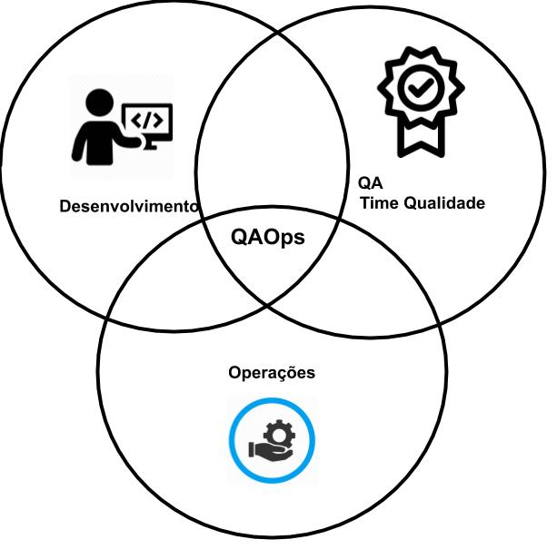

“Será possível ter uma cultura onde as pessoas têm coragem de falar a verdade quando erram para ajudar os times a resolver mais rápido os problemas em produção e evitar a recorrência? Como aumentar a frequência de deploys sem impactar a qualidade e minimizar a guerra entre os departamentos com a verdadeira colaboração e empatia?”
Começo meu primeiro artigo usando essas duas perguntas feitas no livro Jornada DevOps, essa pergunta até os dias atuais causa um grande impacto nas empresas, onde há a dificuldade e consenso entre os times de desenvolvimento e de operações (infraestrutura). Neste conflito originou-se a palavra DevOps que é a contração de dois termos em inglês que identifica as equipes envolvidas nas atividades de construção e implantação de um software:
- Development: equipe responsável pela identificação dos requisitos com o cliente, a análise, o projeto, codificação e os testes.
- Operations: equipe responsável pela implantação em produção, pelo monitoramento e pela solução de incidentes e problemas.
A criação desse conceito é originário de 2009 pela apresentação de John Allspaw e Paul Hammond na conferência Velocity da O’Reilly. Nesta apresentação John e Paul apresentaram “Mais de 10 implantações por dia: Cooperação entre Dev e Ops no Flickr”, onde a parte principal desta apresentação é Cooperação entre Dev e Ops, criando assim UMA CULTURA de trabalho mútuo entre dev e ops, na qual o maior objetivo dessa união é a entrega do software funcionando em produção de forma, ágil, segura e estável.
Assim, com a aplicação bem-sucedida do DevOps, desencadeou o surgimento de práticas semelhantes, como DataOps, ArchOps, DevSecOps e QAOps, todas elas complementam a metodologia DevOps, com o objetivo de otimizar o ciclo de vida do desenvolvimento de software, mas afinal, QAOps o que significa?
 Ilustração de onde o QAOps desempenha o papel dentro de uma estrutura de times em uma empresa.O QAOps combina responsabilidades de teste e garantia de qualidade, e tudo isso acompanha o desenvolvimento de software. Anteriormente, as responsabilidades pela qualidade de software não eram claramente atribuídas e supunha-se que os “testadores deveriam lidar com os problemas”, fazendo com que ocorresse fraca capacidade de trabalho e resultados ineficientes. A cooperação entre os departamentos, a clara estratégia de qualidade de uma empresa e seu desenvolvimento na prática de QAOps formam as políticas básicas das empresas de rápido crescimento. As práticas básicas de QAOps incluem:
Teste Automatizado
Principal pilar da estrutura de QAOps. Teste automatizados significa executar testes com a ajuda de tecnologias e ferramentas e com um esforço humano mínimo. O QAOps deve estudar o produto em detalhes e entender as especificações antes de criar a estrutura de automação. Dependendo do produto e do estágio real de desenvolvimento, o QAOps pode decidir quais testes podem ser automatizados com sucesso para ajudar a economizar tempo e testar as funcionalidades de uma maneira mais eficaz.
Os tipos mais óbvios de teste que devem ser automatizados são os casos de teste de regressão. Esses tipos de teste consomem o tempo dos testadores, onde seria interessante utilizar esses testadores para criar casos de teste de automação. Da mesma forma, as funcionalidades que mais são executadas no produto, bem como as de suma importância para o funcionamento do produto devem ser automatizadas, pela razão que a medida que o produto cresce em funcionalidade e recursos, você não deseja que suas funções mais usadas falhem e criem uma experiência ruim para o usuário.
Vamos considerar uma história, João é um testador de software, encarregado de garantir a qualidade e a compatibilidade do navegador com o aplicativo da web. Para isso João deve para cada ticket em estágio de teste, deve testar nos navegadores mais famosos, sistemas operacionais mais famosos, bem como para cada ticket ele deve realizar um cadastro que é de suma importância para o funcionamento do produto que contém 20 campos de entrada de informações.
No começo, João pode achar até interessante realizar manualmente, contudo, com o passar do tempo vai se tornar uma tarefa desgastante e maçante, nesta parte João aceita uma frase bem popular no desenvolvimento de software “Computadores são desenvolvidos para fazer trabalhos repetitivos. Quando você faz trabalhos repetitivos, os computadores se juntam para rir de você...”. Desta forma, João automatizando esses testes, terá tempo para realizar levantamento de informações para melhorar a qualidade do produto, bem como garantirá que erros de desenvolvimento não acontecerá no futuro em telas que estão cobertas por testes automatizados.
Teste Paralelo
Como parte da estrutura QAOps, os testes devem ser executados rapidamente (em paralelo com o pipeline de entrega). O processo de teste automatizado garante uma aceleração no processo de teste, contudo, com o aumento da cobertura dos testes pode se criar gargalos de desempenho fazendo com que segure a entrega do código para o cliente.
Ainda com o exemplo de João, com o tempo João conseguiu automatizar várias telas do produto web, contudo percebeu que a execução do teste para o navegador B é feito após o navegador A, sendo que os testes não há dependência entre eles. Assim João precisar fazer com que os testes se tornam paralelos onde os testes para o navegador A e os testes para navegador B, bem como os testes em rotinas interdependentes executem simutaneamente em paralelo, garantindo assim maior velocidade nos testes e rapida entrega ao cliente.
Integrando Dev & Ops ao controle de qualidade.
A prática final para alcançar uma estrutura de QAOps é tornar as atividades de QA parte do pipeline de CI / CD. Uma das maneiras mais fáceis de integrar as operações de Desenvolvimento e qualidade é fazer com que os desenvolvedores escrevam casos de teste e para os engenheiros de operações de TI identificar possíveis problemas de UI / UX no aplicativo da Web por meio da assistência da equipe de qualidade. Isso oferece a oportunidade perfeita para os desenvolvedores e a qualidade colaborarem. Essa colaboração entre as diferentes partes interessadas apenas torna todo o processo de desenvolvimento e teste mais eficiente.
De volta a João, ele decidiu compartilhar sua perspectiva com seu gerente e partes interessadas. Ele percebeu que, quanto mais cedo os casos de teste são escritos, mais rápido se torna o lançamento no mercado. Ele sugeriu a implementação de testes shift-left para incorporar a estrutura de QAOps em sua empresa. Desde que o número de anomalias detectadas após a migração do pipeline de CI / CD foi notavelmente reduzido.
Ciclo Básico.
Em uma abordagem básico de desenvolvimento de DevOps e QAOps consistem em:
- Um ambiente de integração contínua (com CI / CD) deve ser configurado para que os desenvolvedores e testadores executem os testes no código.
- As equipes de desenvolvimento DEVEM realizar testes contínuos testando todas as novas funcionalidades criadas no aplicativo. Eles devem testar o aplicativo quanto à sua funcionalidade, desempenho, facilidade de uso da interface. Eles devem criar casos de teste agressivos para garantir todos os cenários de casos extremos para a funcionalidade criada. É o desenvolvedor que é a melhor pessoa para conhecer toda a funcionalidade em detalhes desde que a construiu.
- Paralelamente, as equipes de qualidade devem começar a testar a nova funcionalidade para manter o andamento do pipeline de desenvolvimento, bem como realizar testes mais rígidos com foco no usuário e automatizar testes voltados ao usuário, como caso de testes end-to-end.
- Após a conclusão do teste pela equipe de qualidade e a finalização, a equipe de operações de TI deve executar uma implantação do aplicativo Web e fornecer a finalização. Somente após a aprovação, o processo de liberação deve começar.
- Da mesma forma, após as atividades de lançamento, a equipe de Operações de TI deve ficar de olho no aplicativo da web para garantir que tudo esteja funcionando conforme o esperado. Eles devem monitorar todos os aspectos do aplicativo para garantir a eficiência.
Melhores Práticas
Com base na perspectiva da cultura QAOps, há um conjunto de práticas recomendadas para serem seguidas, como:
- O processo de teste contínuo deve ser integrado ao ciclo de vida de desenvolvimento de software. Isso ajuda as empresas a reduzir os riscos e garantir uma liberação mais rápida do produto e tempo de lançamento no mercado.
- Todas as equipes da organização (Dev, operações de TI, qualidade) devem fazer parte de todo o ciclo de lançamento. Eles devem garantir a colaboração e a comunicação eficaz durante todo o curso do lançamento.
- O CI / CD deve ser feito regularmente, preferencialmente diariamente. O trabalho de todos deve ser mesclado no pipeline de liberação. Isso ajuda a identificar os defeitos nos estágios iniciais e corrigi-los antes que seja tarde demais.
- As equipes de qualidade devem fazer parte do planejamento de liberação e do processo de coleta de requisitos. Será mais eficaz se as equipes de qualidade trabalharem junto com as equipes de desenvolvimento para fornecer contribuições vitais durante o desenvolvimento.
- As métricas de cada equipe devem ser definidas e medidas em intervalos definidos durante o processo de liberação.
- A equipe de qualidade devem usar ferramentas e scripts de automação para automatizar o máximo possível de testes. O teste de regressão profunda deve ser realizado nos recursos existentes quando uma nova funcionalidade é desenvolvida para garantir que os recursos existentes não sejam quebrados.
- Os desenvolvedores devem começar a pensar como testadores, e os testadores devem fazer o vice-versa, (ie) corrigir o código. Isso faz com que todos na organização assumam a responsabilidade pela qualidade geral do produto.
Como o QAOps podem auxiliar em uma empresa?
O QAOps pode parecer um termo semelhante ao DevOps, contudo sua diferença é feita entre o conjunto de operações necessárias para ser colocada em prática. Para se criar uma cultura DevOps deve haver uma mudança cultural enorme, sendo que o QAOps realiza uma estruturação entre os desenvolvedores e testadores a fim de trabalharem mutuamente para obter resultados mais rápidos e testar novas partes do aplicativo antes do lançamento.
Porém, para haver essa cultura de trabalho mútuo, deve haver a comunicação dos principais valores que estão em jogo para a melhor performance do produto, bem como o entendimento das partes que ambas as equipes são de suma importância para o produto.
Refletindo suas vantagens e desvantagens da abordagem QAOps, deve-se notar que não existe uma verdade absoluta e que não existe abordagens que irão resolver todos os problemas do desenvolvimento de software. Um fato irrefutável é que a abordagem QAOps chama atenção para a questão da colaboração eficaz entre técnicas e a qualidade, fazendo com que garantem juntos a qualidade do código.
Espero que gostem, até a próxima :)
Referências
- Manual De DevOps: Como obter agilidade, confiabilidade e segurança em organizações tecnológicas
- Jornada Devops: Unindo Cultura Ágil, Lean E Tecnologia Para Entrega De Software Com Qualidade
- O projeto fênix: Um Romance Sobre TI, DevOps e Sobre Ajudar o seu Negócio a Vencer
- The Cucumber for Java Book: Behaviour-Driven Development for Testers and Developers (English Edition)